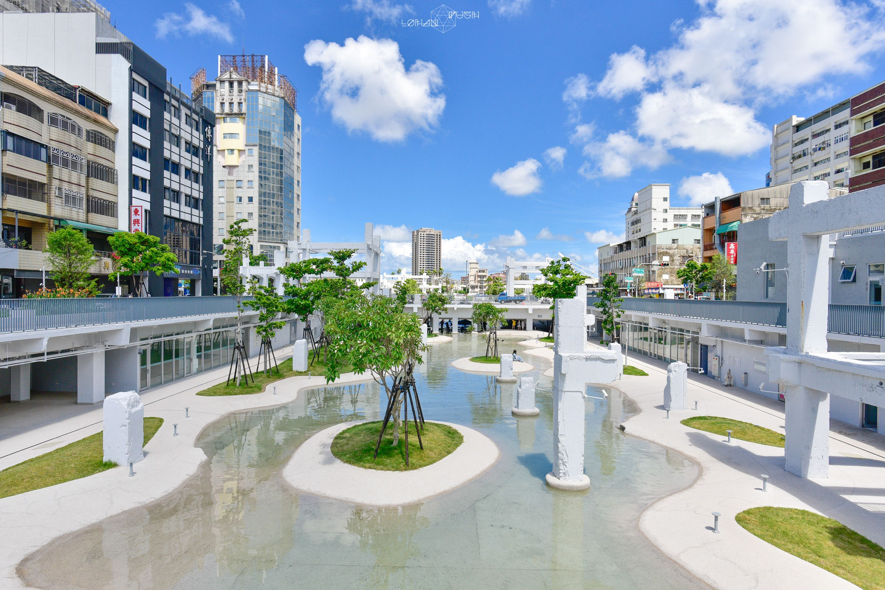

景點介紹

河樂廣場
河樂廣場為原中國城舊址，曾是台南重要的商圈之一，經拆除後改建為親水公園，為台南市區最大的親水廣場，更曾被富比世雜誌譽為「全世界最值得期待的七大公園」之一。
公園內特意保留部分中國城遺構，並規劃拆除回填展示區，讓民眾了解其曾歷經台南府城最繁華的運河碼頭、中國城的興衰，直至今日蛻變為親水公園，成為一個具有歷史足跡的場所。河樂廣場寓意為西起環河街、東至康樂街，由兩條街各取一字組合而成，河樂音同「和樂」，寓意「闔家歡樂」，是適合親子同遊的戲水場域。
結束公園的散心後，可前往鄰近的海安路藝術街，這個位於街道上的獨特美術館擁有各式風格的公共藝術裝置，路上更林立著數間店家，推薦與三五好友相約於此，閒聊小酌度過一個悠閒的周末。